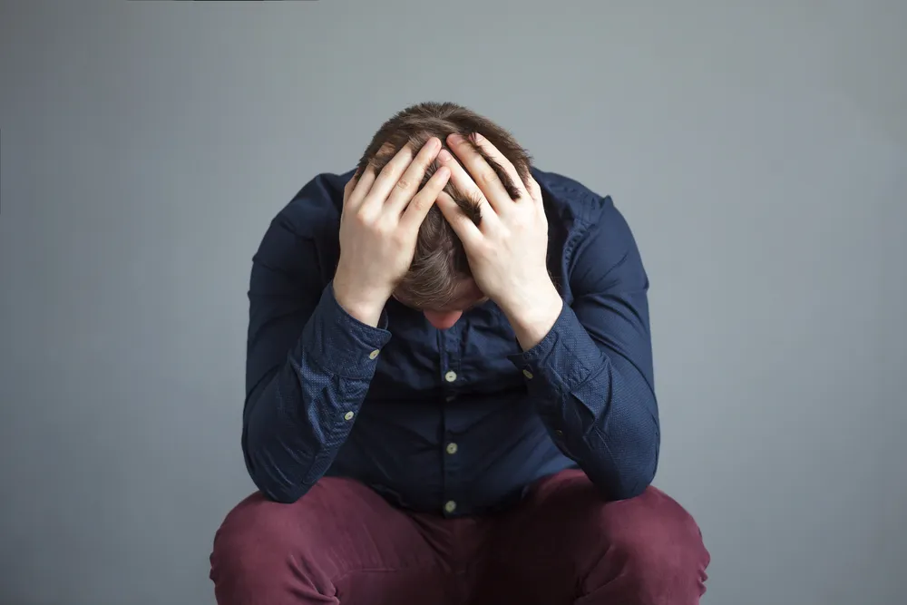

Signs of Bipolar Disorder: Depression and Mania Symptoms

Bipolar disorder is a mood disorder that is also known as manic-depressive disorder. This illness is a mood disorder which carries a psychiatric diagnosis. A person who is bipolar may experience deep depression with episodes of mania as a complete mood shift.
There are considered to be three classifications of bipolar disorder. Bipolar I disorder is when a person experiences defined manic episodes. Bipolar II disorder is when a lesser mania, called hypomania, is paired with depressed episodes.
Cyclothymia is when a person does not experience severe depressed or manic episodes but still cycles through hypomanic and depressed moods. Bipolar disorder can also be rapid cycling, which is when a bipolar individual experiences at least four episodes through a year. This may be through a day to day difference with ultra-ultra rapid cycling. Normally, bipolar individuals may only shift from depressed to manic once a year.
Lastly, bipolar “Other Specified” or “Unspecified” are when a person does not fit in any specific category but still experience impairment from their bipolar symptoms.
The symptoms for bipolar disorder can vary widely from person to person. It is important to understand that this disorder is marked by both depression and mania- without both of these conditions, the diagnosis may be for a different mood disorder.
Here are 15 common symptoms for bipolar disorder, categorized by their depressed or manic instances.
Depression: Suicidal Thoughts
Bipolar disorder is often mistaken and misdiagnosed as depression, says WebMD . One of the most serious symptoms of bipolar disorder is the possibility for suicidal thoughts. In the depression phase, the sufferer may feel so down on themselves that they contemplate suicide.
Even when diagnosed and placed on medication, suicidal thoughts may continue. They can be an unfortunate side effect of the medication. If you are feeling suicidal or you are worrying about a person you know who may be suicidal, contact your local mental health hotline and seek treatment.
Mania: Racing Thoughts
During the manic phase of bipolar disorder, many individuals may experience racing thoughts. Their minds may be so full of ideas, inspiration, and emotions that they find it hard to deal with. This symptom may present itself in irregular speech patterns. “This flight of ideas sometimes occurs with pressured speech,” says Health.com. The affected individual may find it hard to continue with a conversation for more than a few seconds. The thoughts they experience may be disturbing or find connections between ideas where none is present.
On top of all this, racing thoughts in a bipolar patient is hard to diagnose because the individual might not recognize or want to admit “that their mind is racing out of control,” writes Health.com who spoke to Carrie Bearden, PhD, an associate professor in residence of psychiatry and behavioral sciences and psychology at the David Geffen School of Medical at UCLA.
Depression: Loss Of Interest In Social Activities
A depressed individual may isolate themselves socially by refusing to take part in social activities. Previous activities may not interest them anymore. This may be brought on by social anxiety or by lacking the energy to be social.
Attending social activities may be overwhelming for a bipolar individual. Unfortunately, avoiding social activities will further isolate the sufferer, raising social anxiety and feeding their depression. Getting “out there” is a great therapeutic activity. They should take social activities one step at a time- slowly pushing their boundaries of what is comfortable.
Mania: Inflated Ego
When in a manic episode, a bipolar individual may develop an inflated ego. “They feel grandiose and don’t consider consequences; everything sounds good to them,” says Done Malone, MD, chair of the department of psychiatry at Cleveland Clinic in Ohio while talking to Health.com. This is a huge difference from the self loathing feeling they may feel when in a depressed episode.
The person may change their clothing and everyday activities to show off to others. They may also alienate people close to them by degrading them in comparison to their temporary ego. In addition to changing their lifestyle, they might also do more dangerous things through erratic behavior like spending all of their money (or worse, money they don’t have) or engage in an affair. As the manic episode fades into depression, their actions may cause self loathing and further alienation.
Depression: Feelings of Guilt
A person who is depressed may frequently feel guilty about their condition. They may feel bad for the pressure their condition places on their loved ones. They may feel bad for not being able to control their emotions. Bipolar disorder is not a choice, but a burden.
The suffering person should not feel guilty for their condition. Unfortunately that is easier said than done. Understanding the medical condition can help the affected individual understand that their emotional and physical symptoms.
Mania: Overspending
The feeling of mania may have financial repercussions. The bipolar individual may go on shopping sprees when feeling good about themselves. They may not consider their financial obligations, instead they may purchase based on emotional feelings rather than rational ones.
At the end of a manic episode, their bank accounts may be cleared and they can even hold new consumer debt. The physical items they possess may temporarily make them feel good, but they will never act as a medical cure for their condition.
Depression: Low Energy
When a bipolar person is in a depressed episode, they may lack the energy to do everyday activities, including showering, cooking and eating, and taking care of their loved ones. The low energy is caused by the depression, but also the abnormal sleeping habits they may possess.
A depressed individual may sleep for many hours longer than needed which can cause residual sleepiness through the day. The sufferer may also suffer from insomnia; staying awake thinking about all their worries. One treatment option for bipolar disorder is to use sleep aids to regulate the sleep cycle of the sufferer, hopefully helping the low energy.
Mania: Impulsiveness
During a manic episode, the bipolar individual may feel impulsiveness, causing them to act irresponsibly. They may skip school or work to partake in more exciting activities. The impulsive symptom may also make the bipolar individual take part in dangerous activities. They may be interested in a whole new host of activities that they would normally hesitate to practice.
Health.com lists “spending sprees and unusual sexual behavior” as the two most common types of erratic or impulsive behaviors. “I have had a number of patients who have had affairs who never would have done that if they weren’t in a manic episode…during this episode they exhibited behavior that is not consistent with what they would do normally,” says Done Malone, MD, chair of the department of psychiatry at Cleveland Clinic in Ohio.
Depression: Angry For No Reason
This symptom is hard to spot because most people get angry or frustrated whenever something irritable happens. The key to recognizing whether their anger is as a result of a bipolar disorder is to distinguish whether their reaction is reasonable. Reader’s Digest talked to James Phelps, MD, director of the Mood Disorders Program at Samaritan Mental Health in Corvallis, Oregon, and co-author of the book, Bipolar, Not So Much: Understanding Your Mood Swings and Depression who said bipolar patients will get angry for no apparent reason. “Anger out of proportion to the situation, rising too fast, getting out of control, lasting for hours, and shifting from one person to another, would differentiate the behavior as a possible bipolar symptom,” says Phelps.
T he frustration at being depressed can manifest itself into anger and rage. This is typically self directed as the bipolar individual may experience self loathing at their condition and inability to control it. The frustration can boil over and the person may misdirect it at their loved ones. The smallest problem may set them off into a rage. When confronted, they may not understand why they are angry, but just that they are. This anger may quickly turn into deep sorrow.
Mania: Increased Sexual Drive
A bipolar person in a manic episode may partake in inappropriate sexual activities. While completely monogamous normally, in a manic episode the person may cheat with multiple partners.
The sexual activities may take place in public places, as the individual may not recognize the legal implications. The sexual activities will have a marked difference between manic and depressed episodes. When depressed, their sexual drive may be non-existent.
Mania: Talking Fast
James Phelps, MD, director of the Mood Disorders Program at Samaritan Mental Health in Corvallis, Oregon, and co-author of the book, Bipolar, Not So Much: Understanding Your Mood Swings and Depression refers to this symptom as being a “Chatty Cathy.” A bipolar patient who is in a manic episode will begin “talking so fast that others can’t keep up or understand — especially in phases with other bipolar symptoms, may be hypomanic,” says Phelps to Reader’s Digest .
This symptom usually coincides with rapid or racing thoughts. It should easily stand out as a warning sign to others, especially if the person of interest doesn’t normally speak that fast. Their thoughts and words will come out so fast that no one, not even themselves will know what they’re saying.
Depression: Drugs and Alcohol
Not surprisingly, people who suffer from bipolar disorder are more prone to using and abusing drugs and alcohol. Reader’s Digest spoke with Smitha Murthy, MD, psychiatrist at the Seton Mind Institute in Austin, Texas who backed this claim up when he said, “People with bipolar disorder have a higher than average rate of a co-occurring substance or alcohol use.”
Similar to alcoholics or addicts, people who suffer from bipolar disorder will use drugs and alcohol as a crutch or an escape. They might indulge as a way to ease their symptoms during a mania phase, or to try and cheer themselves up during a depressive episode.
Mania and Depression: Sleep Issues
It’s common for someone with bipolar disorder to suffer from sleep issues, both while depressed and when in a manic episode. When in a manic episode, they might sleep less because of excitement or anticipation, but oddly never feel tired. On the opposite spectrum, when they’re depressed they’ll sleep for extremely long periods of time and find it hard to muster up the energy to even get out of bed.
Carrie Bearden, PhD, an associate professor in residence of psychiatry and behavioral sciences and psychology at the David Geffen School of Medical at UCLA told Health.com that maintaining a regular sleep schedule is one of the first recommendations she makes for any bipolar patient.
Hypomania: Lack of Focus
This symptom is much easier for people to notice than some of the others on this list because it’ll affect their everyday life, especially their work life. During a hypomanic episode the individual will have lots of energy and be buzzing with creativity and for some, this will be an extremely productive state, but there are many others who won’t be able to focus on one thing for any period of time which means nothing ever gets completed. They’ll have a bunch of different projects on the go, but never any finished products.
“They can be quite distractible and may start a million things and never finish them,” says Don Malone, MD, the director of the Center for Behavioral Health and chair of the Department of Psychiatry at Cleveland Clinic to Health.com.
Hypomania: Inflated Mood
Bipolar disorder is often seen as a condition that takes people between highs and lows or ups and downs which are characterized by episodes of mania and depression. During mania, the individual is in an elevated state that for some people is like an escape from reality. You’d think this symptom would be experienced during a manic episode, but according to Health.com it’s a symptom of what’s known as hypomania. This great mood is described as “a high-energy state in which a person feels exuberant but hasn’t lost his or her grip on reality.”
The source talked to Carrie Bearden, PhD, an associate professor in residence of psychiatry and behavioral sciences and psychology at the David Geffen School of Medical at UCLA who says, “hypomania can be a pretty enjoyable state, really.” They are in great spirits, have lots of energy, feeling creative, and can even experience a sense of euphoria. While it also has its downfalls, this is definitely the more “enjoyable” side of bipolar disorder. Unfortunately, it doesn’t last forever.
Looking for more articles that discuss mental health issues? Check these out:
- 30 Major Depressive Disorder Symptoms
- 15 Natural Remedies for Treating Depression
- 10 Types of Food to Help Manage Depression
Source: https://activebeat.com/health-news/10-symptoms-of-bipolar-disorder-are-you-bipolar/